Rendered via Rich SVG export at 100 cols. Captured 2026-04-17.
Design language: Karna brand palette, Nerd Font icons with ASCII fallback,
semantic design tokens (karna.tui.design_tokens) and
karna.tui.icons. Width-matched snapshots so you can eyeball
spacing differences directly.
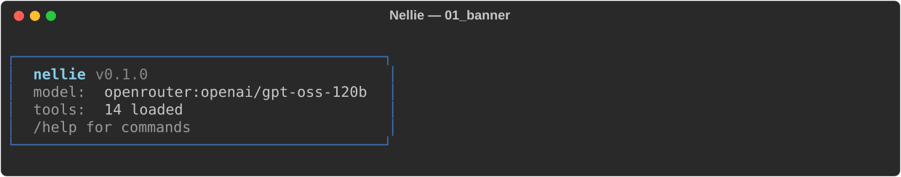
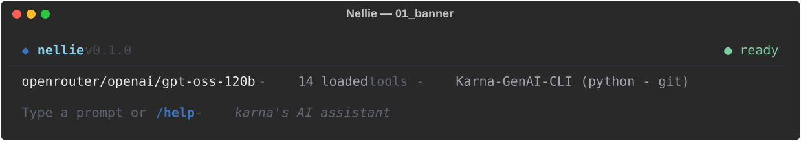
Redesigned as a minimal header (diamond glyph, wordmark, version) above a
dim divider rule, followed by a one-line status row
(model - N tools - workspace (kind - git)) and a dim hint
line. Banner learns about the workspace via project-marker detection
(pyproject.toml → python) and git presence. Gone: the boxed
panel; in: horizontal rhythm + generous vertical whitespace.
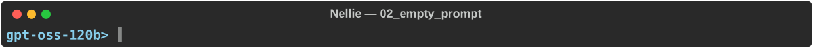
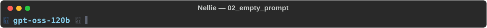
Prompt now has a leading brand-blue chevron affordance, a
muted arrow glyph between the model name and the cursor, and an explicit
muted cursor stub. Signals "you are typing here" more clearly than a bare
model>.
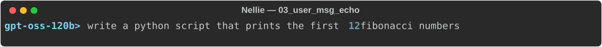
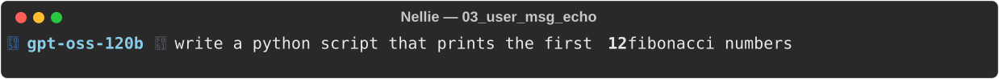
Same information, but the chevron + arrow glyphs visually bracket the user's
message so it reads as a chat turn rather than a shell line. The user body
uses text.primary so it pops against the muted chrome.
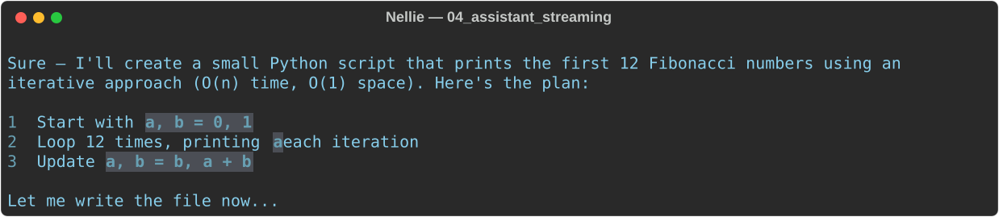
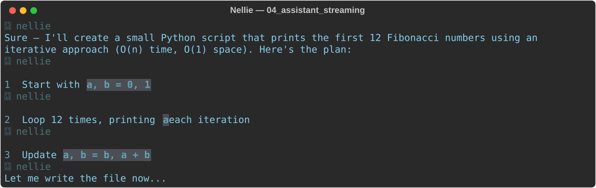
Explicit role label (* nellie in dim cyan)
above the markdown body. OutputRenderer now flushes at
sentence boundaries, so scrollback lands in clean paragraph chunks
rather than mid-token. Turn rhythm: a dimmed divider above each new
turn. Long transcripts finally scannable.
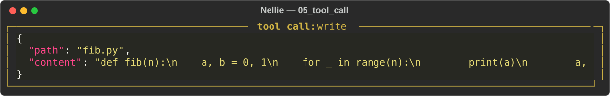
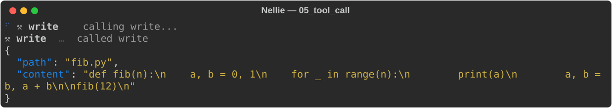
The panel is gone. A tool call is now a single-line header
(⚒ write … called write) followed by a borderless
ansi_dark JSON block. Visual weight drops dramatically; JSON
now reads as content, not chrome. Very long args auto-collapse to
head + … N more lines … + tail.
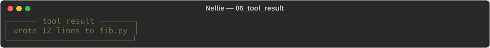
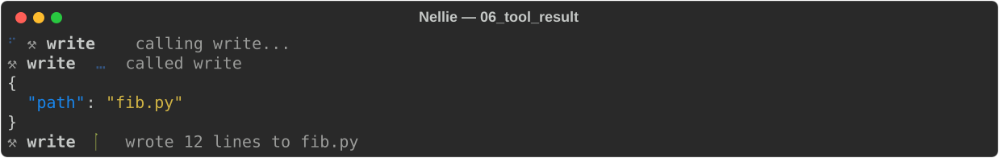
Result collapses to a single status line
(⚒ write ✓ wrote 12 lines to fib.py) — check glyph in
success-green, summary in muted text. No panel, no re-displayed args.
For long outputs (> 120 chars) a borderless output panel appears
below with the body; JSON content auto-renders with syntax highlighting.
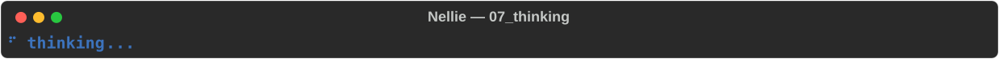
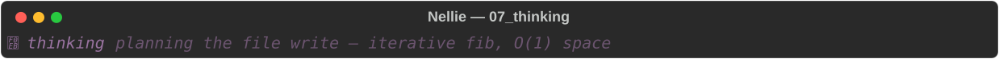
Reasoning gets a dedicated event kind
(THINKING_DELTA) and its own semantic color
(violet accent.thinking, italic). First line of reasoning
renders inline as a preview; multi-line reasoning collapses to
… (N chars) so it never dominates the transcript.
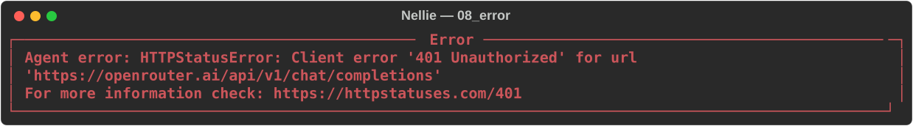
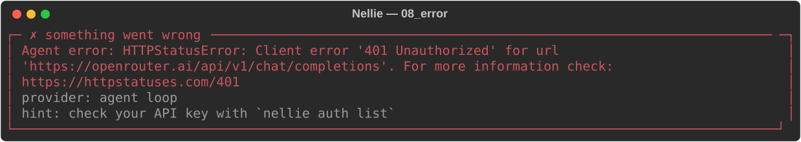
Error panel now has a title (✗ something went wrong), a
primary message (coloured but not bold-red screaming), a context line
(provider: agent loop), and a pattern-matched hint
line that recognises common failure modes — 401/403, 404 model,
429 rate-limit, connection refused, timeouts, TLS. For the 401 case the
hint is check your API key with `nellie auth list`.
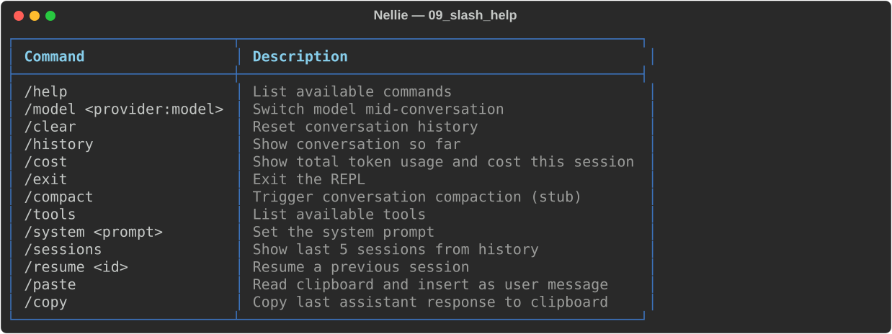
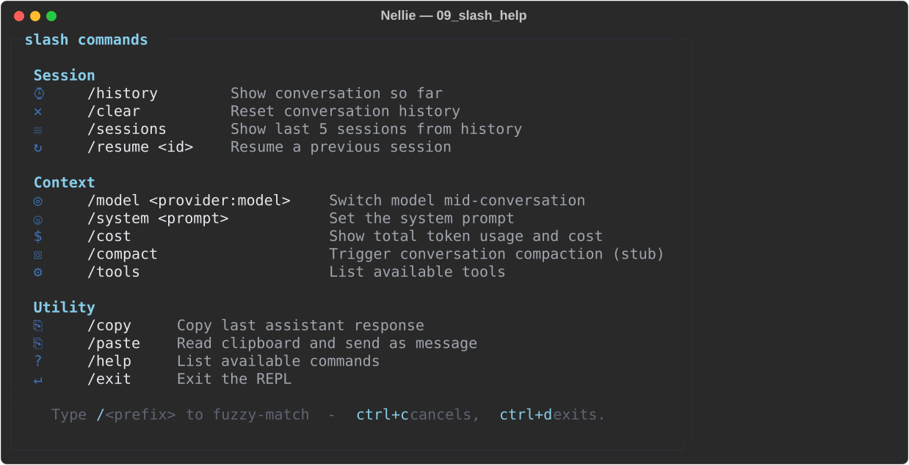
Dense 13-row table → grouped panel with Session / Context / Utility sections, each row prefixed with a command-specific icon (clock for history, ring for model, gear for tools, etc.). Footer hint surfaces the fuzzy-match and Ctrl-C/D keybindings so new users discover them.
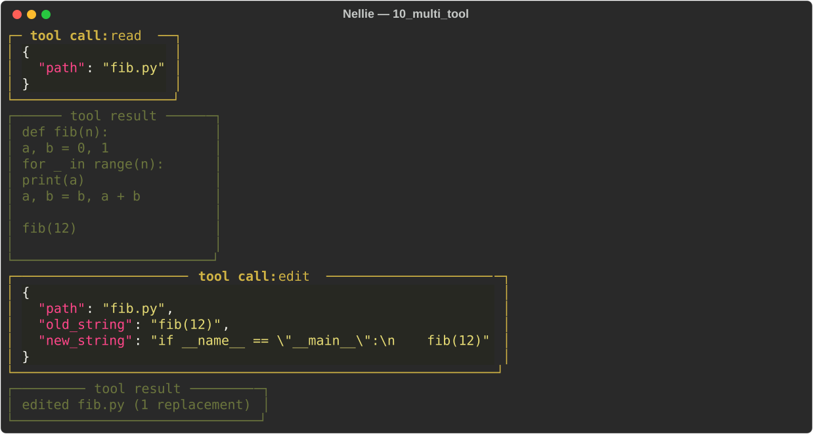
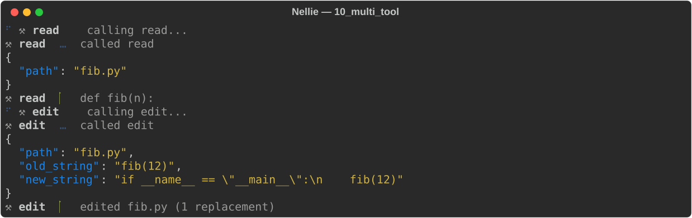
Before: four stacked panels (tool call: read,
tool result, tool call: edit,
tool result), all different widths, no grouping, Monokai
vs dim-green chrome fighting each other. After: two pairs of
header + body, each tool collapsing to a ⚒ name ✓ summary
line once done; long outputs get a borderless content panel. Half the
vertical real estate, lifecycle state visible at a glance.